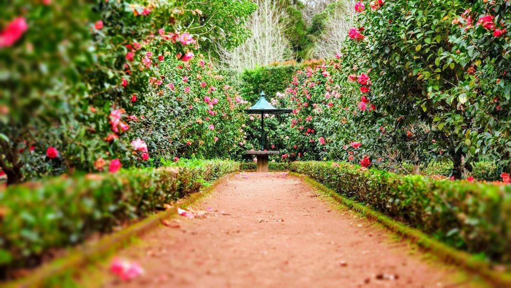
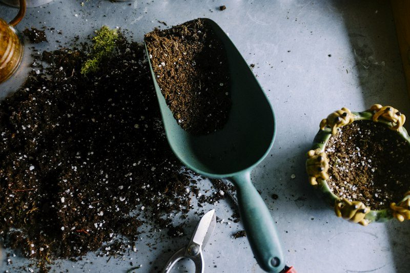

Lan Tỏa Năng Lượng Xanh Vào Từng Góc Làm Việc
GreenCorner được thành lập từ năm 2021 bởi những người trẻ đam mê cây cảnh và lối sống xanh bền vững. Giữa cuộc sống đô thị ồn ào và áp lực công việc văn phòng, chúng tôi tin rằng một chậu cây nhỏ đặt trên bàn làm việc không chỉ là vật trang trí, mà còn là một "người bạn" giúp thanh lọc tâm trí và tạo cảm hứng sáng tạo mỗi ngày.
Chúng tôi tập trung vào các giống cây cảnh mini để bàn, sen đá, xương rồng và các dòng cây phong thủy được thuần dưỡng kỹ lưỡng để sống khỏe trong môi trường điều hòa và ánh sáng trong nhà.

Quy Trình Ươm Dưỡng Tại Vườn
Mỗi chậu cây trao đến tay khách hàng đều trải qua quy trình chăm sóc nghiêm ngặt

Tuyển Chọn Giống Cây Khỏe Mạnh
Chọn lọc những cây mầm có bộ lá dày, thân cứng cáp, không mang mầm sâu bệnh từ các nhà vườn uy tín tại Đà Lạt.
Phối Trộn Đất & Giá Thể Chuẩn
Sử dụng đá pumice, perlite, xơ dừa đã xử lý và phân trùn quế giúp rễ thoáng khí, thoát nước tối ưu chống úng rễ.
Dưỡng Rễ Thích Nghi Môi Trường
Cây được dưỡng ít nhất 2–3 tuần trong điều kiện ánh sáng gián tiếp và nhiệt độ văn phòng trước khi xuất vườn.
Đóng Gói Chống Sốc An Toàn
Chậu và gốc cây được quấn màng bảo vệ, cố định chống rung lắc để đảm bảo cây nguyên vẹn khi giao tận tay khách.